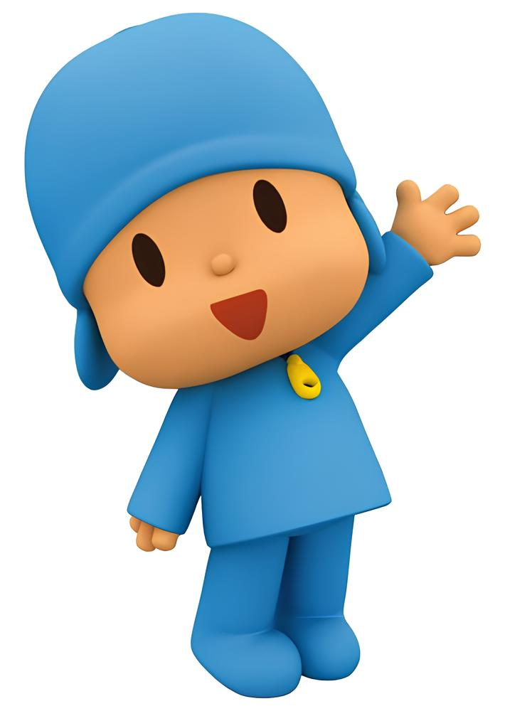
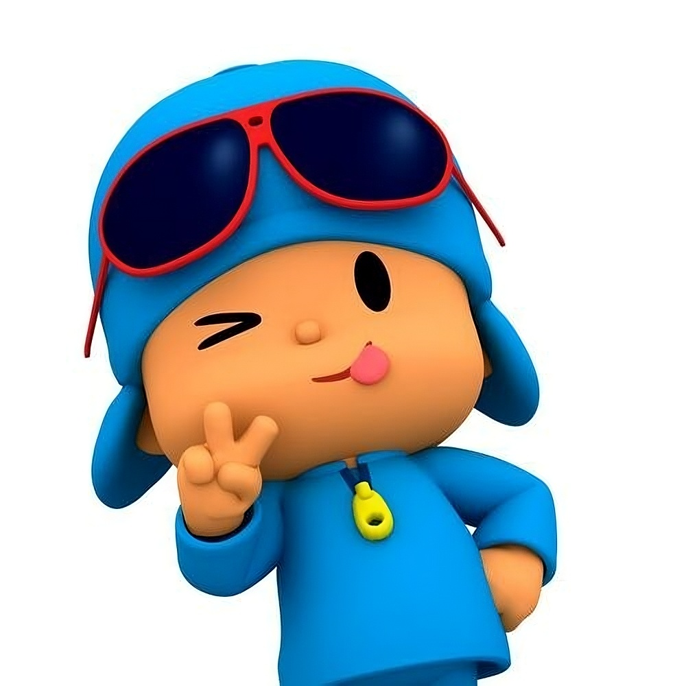
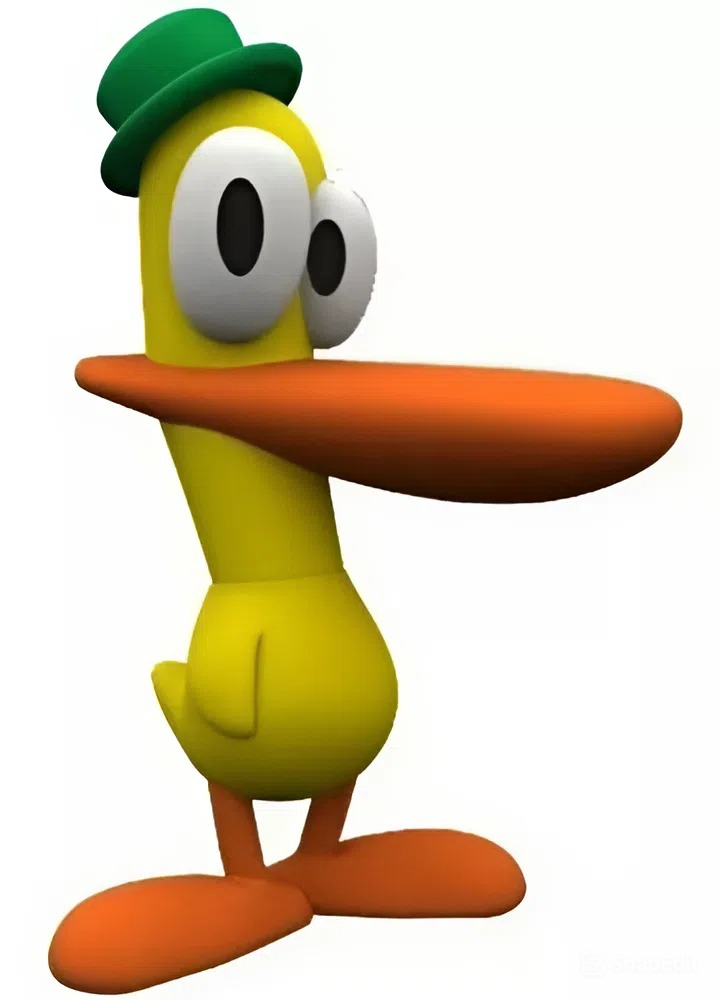
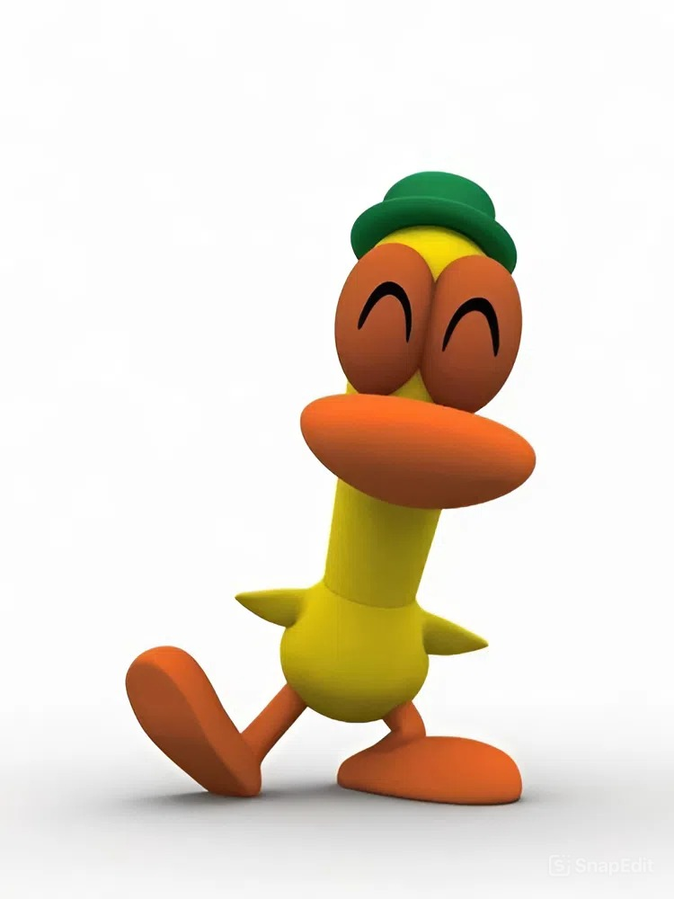
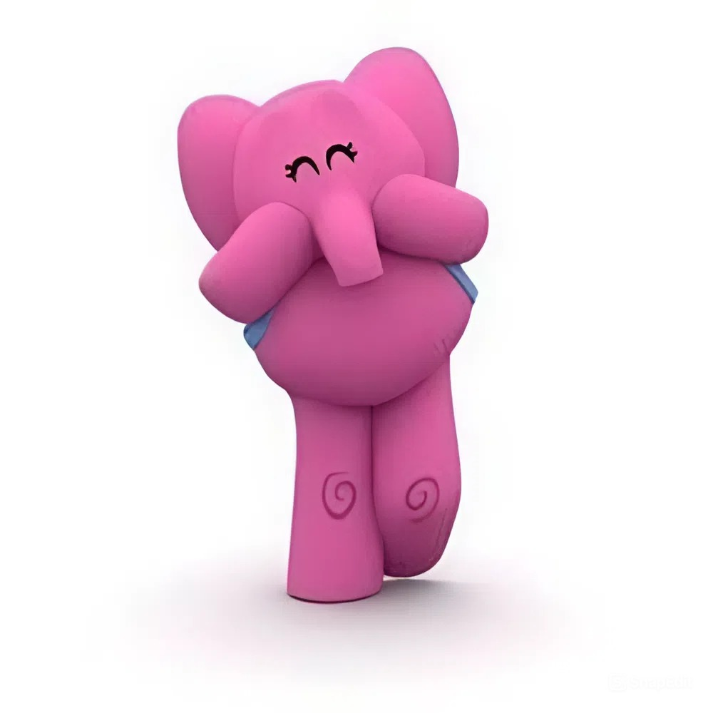
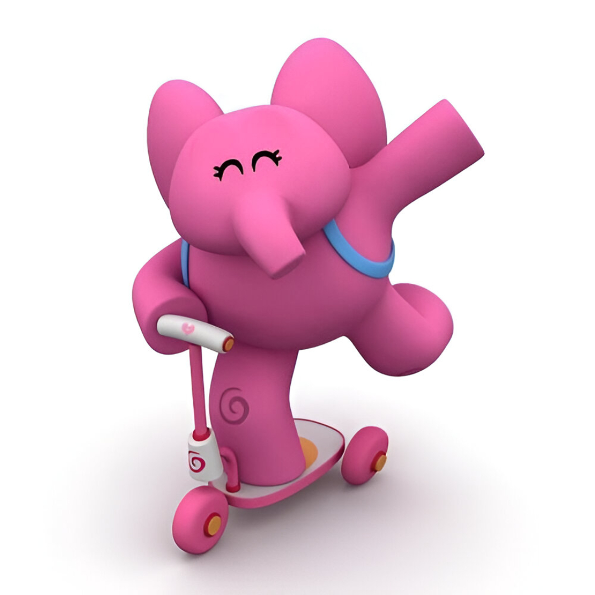

Descubra aqui nesse site muitas coisas sobre Pocoyo
Pocoyo,descubra esse vasto universo
O Que é Pocoyo?
Pocoyo é uma série infantil com fins educacionais,a série foi criada por 3 pessoas,que são David Cantolla,Luis Gallego e Guilhermo García Carsí.
A série é composta com 4 temporadas,cada temporada consiste em 52 episódios,com cada um dos episódios com 7 minutos,junto com 60 episódios especiais produzidos para o YouTube o show está atualmente em sua 5° temporada com seus 13 episódios
Origem De Pocoyo
Pocoyo inicialmente surgiu na Espanha,no Reino Unido,os seus criadores(mencionados anteriormente) criaram a série com fins educativos e comédia pré-escolar.
Pocoyo surgiu com o objetivo de educar crianças,estimulando sua curiosidade e suas habilidades cognitivas de forma lúdica.
Personagens
aqui você descobrira quais são os personagens de Pocoyo, imagens, descrição, aparência, personalidade e mais, então venha ver!
Pocoyo

Quem é Pocoyo?
Pocoyo é o protagonista do desenho animado que estando falando aqui,no caso, protagonista da série Pocoyo, ele é uma criança com pais que ainda não foram apresentados mas que talvez ainda sejam apresentados
Sua personalidade
Pocoyo é um garoto curioso e bondoso, sempre descobrindo e ajudando os outros, mas como ainda é uma criança ele tem desentendimentos com outros personagens dá série e ser um pouco birrento
Seus acessórios
Pocoyo tem alguns acessórios/itens um deles é seu óculos escuro
Óculos

esse óculos que o pocoyo usa geralmente aparece em episódios de musica,nas aberturas ou em episódios especiais
Pato

Quem é Pato?
Pato é o amigo do pocoyo na série, o Pato na maioria dos episódios geralmente está ao lado do pocoyo,descobrindo o mundo e explorando
Sua personalidade
O pato tem uma personalidade de uma pessoa gentil, mas as vezes ele também tem uma personalidade meio introvertida e rabugenta, por isso as vezes briga com o próprio Pocoyo
Seus acessórios
O Pato tem alguns acessórios/itens, um deles é sua cartola
Cartola

A cartola do Pato é uma cartola verde, ele sempre usa essa cartola em todos os episódios, fazendo parte da sua aparência
Elly

Quem é Elly?
Elly é uma amiga de Pocoyo e Pato, ela é uma menina, uma elefante rosa, ela parece ser mais velha do que Pocoyo e Pato por agir com mais inteligência do que Pocoyo e Pato
Sua personalidade
Elly tem uma personalidade de uma mãe, é getil,super protetora mas as vezes mandona, ela é gentil ainda sim a maioria das vezes
Seus Acessórios
Elly tem alguns acessórios/itens como o seu patinete
Patinete

Esse patinete aparece geralmente em episódios de corrida,onde ela compete com Pocoyo numa corrida
Essa foi uma ficha com os 3 personagens principais da série Pocoyo,Mas ainda a mais um pouco que é necessário ser dito,por isso,vehha ver
Aqui você verá mais informações sobre Pocoyo
Formato dos Episódios
Os formatos dos episódios são simples e com pouca enrolação, geralmente cada episódio tem em torno de 7 minutos, não passando disso
Mas por que esse formato?
Esse formato de episódio tem um objetivo mais direto e centrado,ou seja, é mais objetivo em ensinar e dicar crianças em relação a situações do cotidiano comum
Especiais
Pocoyo recebeu ao longo do tempo alguns episódios especiais, geralmente lançados em datas comemorativas como de ano novo, natal, Halloween e diversos outros, geralmente esses episódios são compilações de episódios normais com um tema parecido ou envolvente com a data comemorativa em questão(os lançados no YouTube em questão)
Mais personagens
Os personagens que apresentamos a cima são os do trio principal,mas não só são eles que estão no desenho,a mais personagens e eles são...
No fim Pocoyo é uma serie que segue por ai divertindo milhares e milhares de crianças, então nada mais justo do que agradeçer a essa série magnífico com esse site,muito obrigado por me acompanhar até aqui e até a próxima